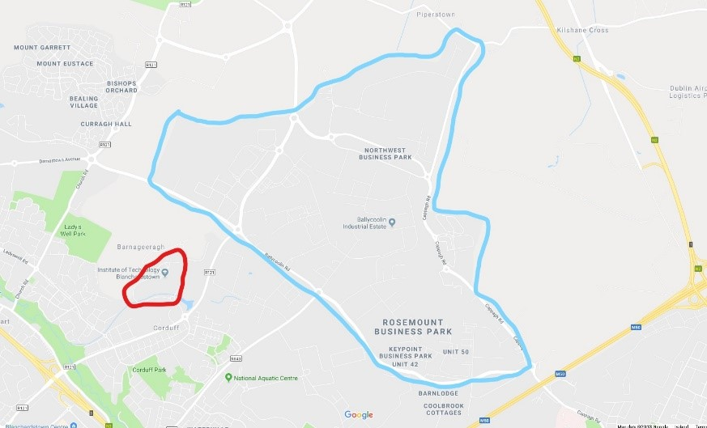
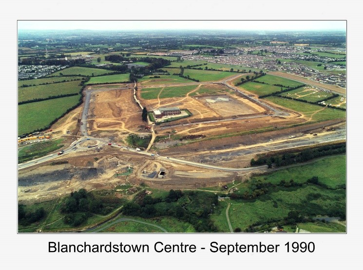

Local Industry
The development of local industry and business around the college campus and the Blanchardstown area.

The Blue line indicates the Blanchardstown corporate park facility which stretches over 100 acres with 75% of the campus being developed over the past 20 years. The red outline is the location of the ITB campus to give perspective to the size of the park.
“Blanchardstown Corporate Park is located in the heart of The Dublin Enterprise Zone. The Dublin Enterprise Zone
consists of 1571 hectares of land primarily zoned for Office, Research and Development, High Technology
Manufacturing, Industrial, General Enterprise and Employment located seven kilometres northwest of the city centre.”
Extract Taken from the http://corporatepark.ie/ website.
The complex is split into two parks and is home to huge businesses
such as Nike, Puma, Bank of Ireland and Bristol-Myers Squibb to name a few.
Another more well-known business development in the area is The Blanchardstown Shopping Centre. With over 180 retail stores, restaurants,
cafes and a 9-screen cinema spread over 3 retail parks and some huge businesses such as Liberty insurance and eBay having offices here,
its easy to see why Blanchardstown is known for its shopping centre. The main development was opened in 1996 and has grown to have over
15 million visitors a year with over 30 million website visits a year.

Blanchardstown Shopping Centre development in 1990 - http://www.blanchardstowncentre.ie/background#